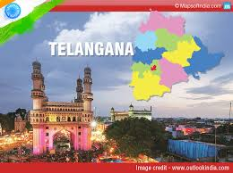

Home to famous attractions like the Char Minar, Golkonda Fort, Chowmahalla Palace and much more, Telangana is a state famous for its bronze castings, minarets and handicrafts. The state was originally a part of the region of Hyderabad in Andhra Pradesh and is said to be packed with a rich history and heritage.
